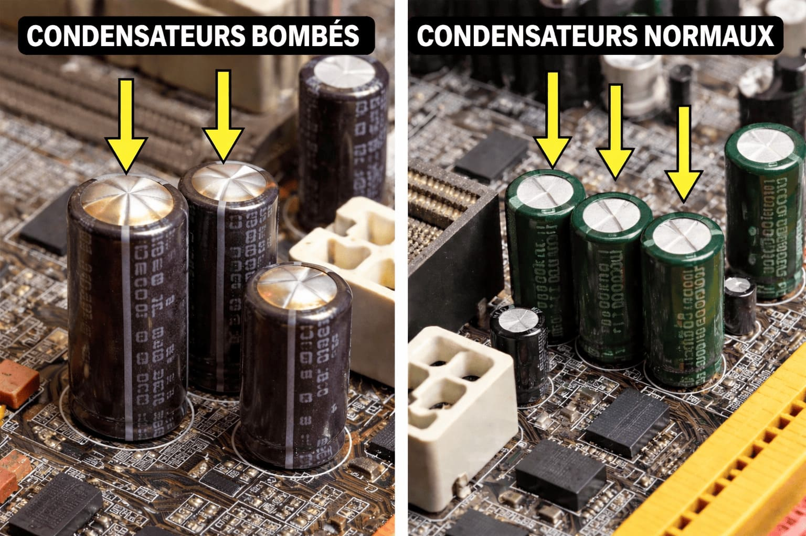

Panne de PC Desktop : Comment Diagnostiquer un Condensateur Électrolytique HS ?
Un ordinateur qui refuse de s'allumer, des redémarrages intempestifs ou des écrans bleus ? Avant de remplacer la carte mère, inspectez ces petits composants souvent responsables.
Un ordinateur de bureau qui refuse de s'allumer, qui redémarre sans raison ou qui affiche des écrans bleus répétitifs ? Avant de remplacer la carte mère ou l'alimentation, le coupable est souvent un composant minuscule mais vital : le condensateur électrolytique. Si vous cherchez une solution fiable pour ces problèmes, comprendre comment identifier ces pannes peut vous faire économiser des milliers de Francs CFA.
Le condensateur électrolytique sert à stabiliser la tension électrique sur la carte mère et dans le bloc d'alimentation (PSU). À l'intérieur, il contient un liquide chimique appelé électrolyte. Avec le temps, la chaleur intense à l'intérieur d'un boîtier desktop peut faire sécher ou bouillir ce liquide, entraînant une défaillance du composant.
C'est la méthode la plus simple. Ouvrez votre boîtier et inspectez la carte mère. Un condensateur en bonne santé doit être parfaitement plat sur le dessus.
Gonflement (Bulging)
Le sommet en aluminium est bombé ou arrondi → composant hors service.
Fuite (Leaking)
Substance brunâtre ou croûteuse au sommet ou à la base → électrolyte qui fuit.
Éclatement
Dans les cas extrêmes, le condensateur peut exploser ou se détacher.

Parfois, le condensateur semble intact visuellement mais sa capacité réelle a chuté.
- Le PC met plusieurs tentatives avant de démarrer à froid.
- Des sifflements aigus (coil whine) provenant de la tour.
- Instabilité lors de tâches lourdes (jeux, montage vidéo).
- Redémarrages aléatoires ou blocages complets.
Réparer soi-même son matériel électronique demande de la précision, mais surtout des composants de haute qualité. Utiliser des pièces de mauvaise qualité pourrait griller définitivement votre processeur ou votre carte graphique.
Pour tous vos besoins en maintenance informatique et électronique, togomicrofarad.com est la référence locale. Nous sommes spécialisés dans la vente de condensateurs électrolytiques au Togo.
✅ Qualité certifiée – Nos condensateurs supportent 105°C, idéal pour le climat tropical.
✅ Expertise technique – Nous comprenons vos besoins en micro-soudure et électronique de puissance.
Que vous soyez un réparateur professionnel à Adakpamé ou un passionné d'informatique, le diagnostic visuel et électrique des condensateurs peut vous éviter des remplacements coûteux. Pour tout Achat de condensateur au Togo, faites confiance à l'expert local.